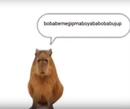

|  | КапибараКапиба́ра — полуводное травоядное млекопитающее из подсемейства водосвинковых Капибара — самый крупный среди современных грызунов. |
Длина тела взрослой капибары достигает 1—1,35 м, высота в холке — 50—60 см. Самцы весят 34—63 кг, а самки — 35—65,5 кг. Самки, как правило, крупнее самцов.
Телосложение тяжёлое. Внешне капибара напоминает гигантскую большеголовую морскую свинку. Голова крупная, массивная с широкой, тупой мордой. Верхняя губа толстая. Уши короткие, округлые. Ноздри широко расставлены. Глаза маленькие, расположены высоко на голове и отнесены несколько назад. Хвост рудиментарный.
| Кто | Старый? | Насколько? |
|---|---|---|
| Капибара | Молодая | 1 год |
| Капибара | Старая | 3 года |